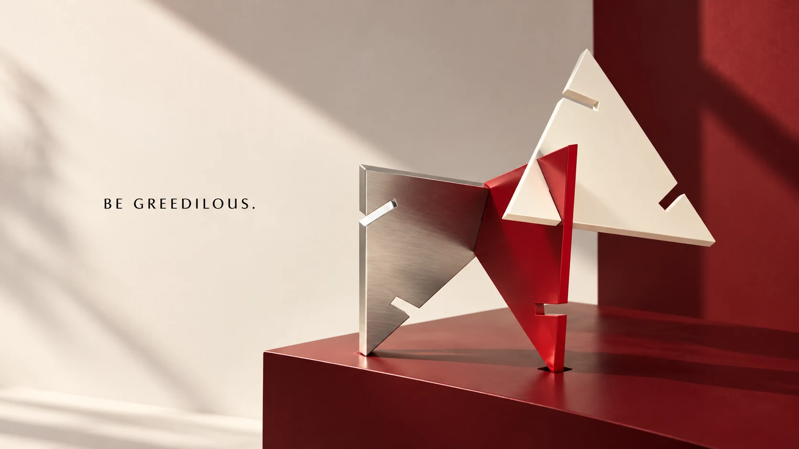
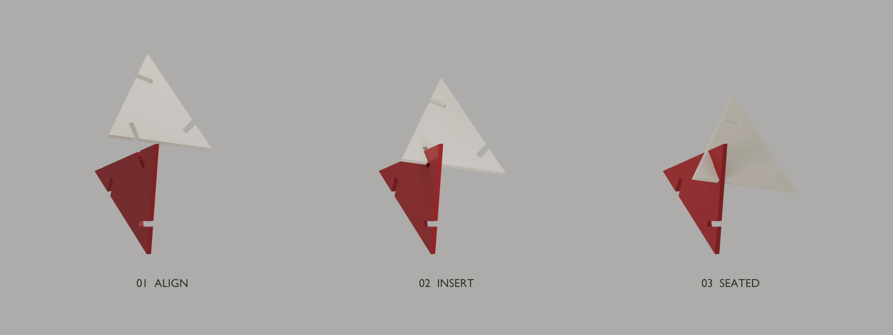
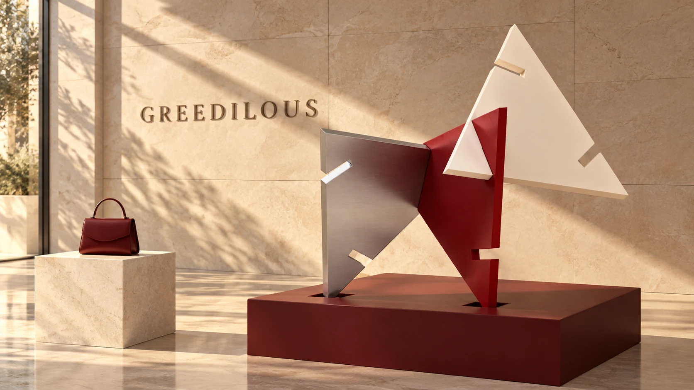

Express yourself.
취향을 선명하게.
나의 취향을 드러내는 데 주저하지 않는 태도.

그리디어스는 대담한 컬러와 프린트로 자신을 드러내는 태도를 표현해왔습니다. 이번 리브랜딩은 그 화려한 자기표현을 이어가며, 브랜드를 더 선명하게 기억하게 할 ‘반복과 연결’의 원리를 더하는 제안입니다.
‘BE GREEDILOUS’는 나다운 취향을 거듭 표현하자는 메시지입니다. 같은 심볼이 반복되고 서로 연결되며 새로운 형태를 만드는 것처럼, 하나의 정체성에서 다채로운 표현이 시작됩니다. 작은 제품 장식부터 패키지와 공간까지, 그리디어스만의 인상을 일관되게 이어갑니다.
취향을 선명하게.
나의 취향을 드러내는 데 주저하지 않는 태도.
반복할수록, 나답게.
나다운 선택을 이어가며 고유한 인상을 쌓는 방식.
연결할수록, 더 화려하게.
하나의 형태가 만나 더 다채로운 표현으로 확장되는 경험.
심볼은 세 방향의 홈을 가진 하나의 삼각형에서 시작합니다. 각 홈은 같은 조각과 만나는 연결점으로, 반복이 실제 형태를 만드는 원리가 됩니다. 하나만 사용할 때는 간결한 서명이 되고, 서로 끼워 연결할 때는 입체적인 조형으로 확장됩니다.
조각의 형태는 일관되게 유지하고, 조합과 크기, 소재는 다채롭게 전개합니다. 반복될수록 알아볼 수 있고, 연결될수록 새로운 모습을 발견하는 그리디어스의 시각 언어입니다.
GREEDILOUS
A FORM THAT CONNECTS
서로의 홈에 맞물리는 조각들.
반복은 평면을 넘어 입체가 되고,
그리디어스의 화려함에 새로운 깊이를 더합니다.

키비주얼은 동일한 조각이 만나 새로운 형태가 되는 순간을 보여줍니다. 평면의 심볼을 입체 오브제로 확장하고, 빛과 그림자로 연결의 구조와 소재의 감각을 드러냅니다.
기존의 짙은 레드를 이어가는 딥레드와 선명한 키레드를 중심으로, 아이보리와 실버가 여백과 빛을 더합니다. 형태는 같아도 색과 소재에 따라 표정이 달라지고, 모든 표현은 하나의 브랜드로 이어집니다.
Be
Greedilous.
반복할수록,
더욱 나답게.
가방과 자켓에는 심볼 한 조각을 작은 장식으로 부착해 제품의 실루엣과 소재를 살립니다. 실버와 딥레드로 표현된 같은 형태가 일상 속에서 그리디어스의 서명이 됩니다.
패키지와 공간에서는 조각을 연결해 반복의 경험을 확장합니다. 작은 브로치에서 손으로 조립하는 오브제, 크게 펼쳐지는 쇼윈도까지. 하나의 심볼이 크기와 쓰임을 바꾸며 브랜드의 다양한 접점을 이어줍니다.
From an object
to an experience.
손끝의 작은 조각에서,
브랜드를 마주하는 공간으로.

반복할수록, 더욱 나답게.